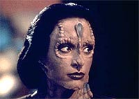
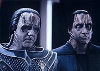
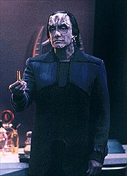
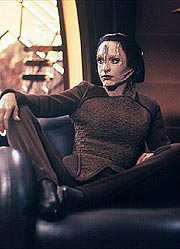
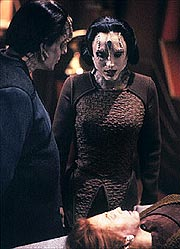

MANCHETE
DO EPISDIO
Enredo
com diversos furos sobrevive
graas a seu forte potencial dramtico
Episdio
anterior | Prximo
episdio
Sinopse:
Data Estelar:
desconhecida.
Kira e Dax esto a caminho de uma
holo-sute quando Kira recebe um chamado de Bajor e fala com uma
arquivista (de nome Alenis Grem) do Arquivo Central Bajoriano, que
procura informaes sobre uma tal Kira Nerys que ficou presa por
uma semana no campo de concentrao Cardassiano de Elemspur, dez
anos atrs. Kira no tem lembrana de tal cativeiro e lembra
claramente estar em outro lugar naquela poca. Kira chega a
contatar um suposto colega de cela (um Bajoriano de nome Yeln),
que confirma que ela ficou presa com ele, mas ela tambm no se
lembra dele.
A major parte para Bajor para tentar esclarecer o mistrio, s
que ela no chega ao seu destino. Ela raptada em Bajor e s
vai acordar na capital Cardassiana --e sua aparncia foi alterada
para a de uma Cardassiana. Um Cardassiano, de nome Entek, um
agente da Ordem Obsidiana, diz que Kira na realidade Iliana
Ghemor, uma agente de campo da Ordem que sofreu cirurgia plstica
e implantes de memrias para se infiltrar na resistncia
Bajoriana, dez anos atrs, se passando por uma terrorista de nome
Kira Nerys (que foi raptada para este fim).

Entek
diz ter sido o seu supervisor na poca e lamenta que os mtodos
de infiltrao Cardassianos sejam por demais agressivos (Iliana
teve todas as suas memrias bloqueadas por questes de segurana).
Ee diz que ela ter dificuldade em se recuperar e se reintegrar
sociedade Cardassiana. De fato, ele tem certeza que ela no
vai acreditar em uma s palavra dele at o medicamento dado a
ela fazer efeito e desbloquear as suas memrias originais.
Kira, de fato, no acredita em uma s palavra de Entek e ignora
a introduo por parte dele do pai de Iliana, legado Tekeny
Ghemor, do Comando Central Cardassiano. Isso apesar de os
sentimentos dele por sua filha parecerem genunos e de Kira estar
hospedada justo na casa do legado e no quarto de Iliana. Frustrado
que a memrias de Iliana parecem no estar retornando, Entek
apresenta o corpo preservado criogenicamente da "real"
Kira Nerys (com um visual de dez anos atrs). Kira ainda est
irredutvel, mas fraqueja quando Entek lhe conta sobre
acontecimentos de sua vida que ela nunca partilhou com ningum.
Ele diz que estas so memrias implantadas pela Ordem
especificamente para a misso de Iliana.
De volta a DS9, Garak diz a Bashir (que passa a notcia
imediatamente a Sisko e ao restante da tripulao) que Kira pode
estar sendo detida pela Ordem Obsidiana na Capital Cardassiana.
Garak diz no poder fazer nada a respeito, mas Sisko acaba forando-o
a mudar de opinio e a seguir com ele e Odo a bordo da Defiant
para Cardssia.

Decidida
a partir, Kira consegue baixar o campo de fora do aposento em
que ela se encontra presa. Mas Ghemor a faz reconsiderar uma fuga,
sabendo que ela seria facilmente apanhada pela Ordem assim que sasse.
A pedido de Ghemor, Kira assiste a uma gravao de Iliana, da poca
em que partiu em sua misso. Kira parece comear a ser afetada
pela situao. Entek volta e inicia uma brutal sesso de
interrogatrio, visando descobrir a informao que Iliana
deveria trazer para casa. Ghemor invoca a sua autoridade de Legado
e faz o interrogatrio parar e manda Entek embora. Diz que no
pode tolerar ver Kira (que acabara de quebrar um espelho e se
encontrava beira de um colapso) ser torturada, e diz que vai
tir-la de l com a ajuda de seus contatos secretos do submundo
Cardassiano. Chega um desses contatos, um jovem Cardassiano de
nome Ari.
Finalmente Kira percebe, pelo discurso de Ari, que Ghemor na
realidade um dissidente poltico e entende que o plano de
Entek era obrigar Ghemor a se expor e, com a sua queda, destruir
todo o movimento. O agente da Ordem se aproveitou da semelhana
de Kira com Iliana, torturando-a psicologicamente no para obter
informao dela, mas para provocar uma reao em Ghemor. Uma
reao que exporia as suas ligaes junto aos demais
dissidentes. Entek e seus asseclas entram na sala, matam Ari e
capturam Ghemor e Kira. Porm, logo chega a cavalaria de Garak,
Sisko e Odo para o resgate. Quando Entek tenta reagir, ele
prontamente morto por Garak.
Ghemor volta com Sisko e cia. para DS9, onde Bashir prova que Kira
(j com suas feies Bajorianas restauradas) de fato 100%
Bajoriana e se descobre que o Bajoriano que
"identificou" Kira na priso sumiu sem deixar rastros
(provavelmente ele prprio modificou os registros a servio da
Ordem, em primeiro lugar). Ghemor diz que espera um dia encontrar
Iliana, que ele acredita que ainda est viva perdida em algum
lugar em Bajor. Pede tambm para que ela e os seus companheiros
tomem muito cuidado com Garak, que ele acredita poder tra-los a
qualquer momento, se isso for do interesse dele. Os dois se
despedem, aparentemente como pai e filha substitutos, um para o
outro. Ghemor aceitou o asilo poltico do governo Mathenite e
Kira fica com uma pulseira que foi da me de Iliana.
Comentrios:

Uma
controversa premissa (que tende automaticamente a alienar --de sada--
uma frao da audincia ao seu final) e um grande problema logstico
(e outros furos de roteiro, menores e secundrios) quase pem
por terra um episdio, que funciona pela sinceridade e
honestidade do seu final, pelas belas caracterizaes e pelas
boas atuaes de Nana Visitor e (principalmente) dos trs
principais atores convidados. Mais detalhes, sem ter que virar
um(a) Cardassiano(a) no processo, nas linhas abaixo.
O ponto crucial e potencialmente mais polmico do episdio a
sua infame premissa: "Ser Kira uma Cardassiana?"
A deciso final de responder tal questo com um sonoro "NO"
foi a mais acertada, tanto para a personagem quanto para a srie.
Tal deciso a priori abandona implicitamente o "truque"
de identidade trocada como linha condutora da histria e deixa
reais sentimentos aflorarem. (Alm do que, decidir por outra
resposta e no transformar Bashir em um idiota parece
completamente impossvel.)
Uma resposta "sim" seria uma reviravolta tamanha para a
personagem e exigiria tanto planejamento para trat-la (ou mesmo
para mant-la) na srie, que simplesmente no seria executvel
na prtica (ou pior, cairia no completo ridculo).
Um "talvez" seria mais tratvel em termos da srie,
mas tambm seria uma espcie de "trapaa", no arco de
histria da personagem, que o transformaria em um arco mais de
busca de identidade pessoal (mais como o de Odo), distanciando-se
do caminho de colocar os seus fantasmas pessoais para trs e se
libertar (em todos os sentidos) do seu passado. Seria claramente
danoso a personagem.
A operao de resgate de Sisko definitivamente complicada de
se explicar (sem dvida um grande problema logstico). E colocar
todas as "mincias que a tornam possvel" por conta da
bolsa de truques de Garak um grande erro. Fica difcil de
saber o que houve, o episdio foi escrito e produzido de acordo
com o cronograma padro de produo (ao contrrio do anterior "Equilibrium",
que foi literalmente escrito e rescrito durante as filmagens --o
qual curiosamente, apesar de seus vrios problemas, no teve um
furo deste tamanho). Ser que tais explicaes ficaram no cho
da sala de edio? Ser que a cara-de-pau imperou e Wolfe e
cia. acharam que ningum iria reparar?
Vamos quebrar a histria para identificar a raiz do problema. O
comeo, com Garak descobrindo sobre o paradeiro de Kira e Bajor e
a Frota considerando essa situao (o seqestro de Kira pela
Ordem) como uma quebra de segurana to grande que autorizam uma
misso to arriscada parece ok. O final, com Sisko, Odo como uma
bolsa, "documentos quentes" e Garak, j em solo
Cardassiano, conseguindo chegar casa de Ghemor, possivelmente
em alguma vila residencial militar, e realizar o seu pequeno
"assalto", parece funcionar tambm. Nossa turma
conseguir voltar para algum tipo de "ponto de encontro"
para deixar o planeta tambm parece possvel, pois Entek deixa
claro que a participao de Garak pegou a Ordem desprevenida.

Claramente
o problema est no meio, em colocar o pessoal em solo Cardassiano
e tir-los de l e traz-los at DS9. O truque de "fazer
a nave parecer um cargueiro", de "The
Homecoming", usado novamente aqui (o curioso
que, ao contrrio de em "The
Homecoming", o truque de "tem algum importante
esperando a minha carga" no funcionou aqui. A reao de
Benil ao cdigo reconhecido de Garak lembrou a de Boheeka, em "The
Wire", ao consultar o cdigo do implante de Garak,
fornecido por Quark).
S que a Defiant em vez de um Explorador e Cardssia Prime em
vez de Cardssia IV fazem uma enorme diferena. Chega at a ser
engraado imaginar Sisko levando a Defiant at a rbita de Cardssia
Prime (?!), se transportando (?!) para a superfcie, se
transportando de volta algum tempo depois (?!) e conseguindo
chegar inteiro em DS9 (?!).
Para fazer isso funcionar, obviamente a Defiant teria que ter
levado o nosso valoroso trio apenas a algum ponto de encontro com
algum ex-colega de Garak da Ordem, que da seguiria, com alguma
nave bem discreta, ida e volta at Cardssia Prime. Como o
roteiro nem tentou salvar a ptria de tal incurso, s nos
resta rir mais um pouco. Sisko cirurgicamente alterado para
parecer um Cardassiano poderia ajudar no sucesso da misso tambm.
E existe um detalhe que torna tudo isto ainda mais engraado: por
que diabos Sisko no rumou camuflado at Cardssia? Existem
duas respostas para isso, uma pior do que a outra.
A primeira que para ficar com o dispositivo de camuflagem a
bordo da Defiant a Federao empenhou a sua palavra de que tal
dispositivo s seria utilizado no quadrante Gama e que quaisquer
informaes adicionais sobre o Dominion seriam partilhadas com
os Romulanos. O "pequeno" problema de tal explicao
que tal informao ainda no havia sido estabelecida em tela
(!).
A segunda que os produtores no tinham muita certeza (e eu no
estou brincando quanto a isso) se T'Rul tinha levado o dispositivo
de camuflagem com ela pra casa em Romulus ou no.
Isso sem falar na chegada de ajuda na hora certa para salvar Kira
e Ghemor, que foi at interessante pela interao entre Entek e
Garak, mas conveniente e clich ao extremo.

O
estratagema de Entek (em termos de meios para executar e motivos
para realizar) funciona razoavelmente bem em termos de histria.
Parece que a sua escolha de Kira no se deve s semelhana fsica
com Iliana (que no seria um problema para a tecnologia da
Ordem), mas sim ao fato de ela ser Bajoriana e ocupar uma posio
(de primeiro oficial de DS9) que a torna portadora de informaes
suficientemente privilegiadas que justificariam um interrogatrio
mais agressivo (aos olhos de Ghemor) por parte de Entek. Fato que
tambm justifica o tempo que a Ordem demorou, aps a retirada
Cardassiana de Bajor, para trazer "Iliana" para casa.
O que no pode ser explicado pelo que foi visto em tela como
Entek sabia do incidente de Kira com a tal felina. Isso poderia
ter sido ao menos levantado pela major no final com Ghemor,
deixando o ponto assumidamente como mistrio. O que no foi o
caso aqui.
Finalmente os personagens...
A histria de "Kira versus Iliana" tem alguns pontos de
real interesse. A escultura de Iliana uma maneira sutil de
causar confuso em Kira. A sua me era uma artista, assim como
Iliana. Em contrapartida, Kira uma negao no ramo, como a me
de Iliana. Aps o colapso, a primeira coisa que vemos Kira fazer
examinar a escultura e aparentemente imaginar: "Ser possvel?"
Bom trabalho!
O comeo do episdio explica que Kira no est to acostumada
assim, e parece mesmo ter uma certa averso, a holo-sutes.
Quando Entek apresenta "o corpo de Kira Nerys", Kira diz
que aquilo tudo poderia bem ser uma simulao no interior de uma
holo-sute, mas l no fundo da personagem parece que j brota
uma dvida, um pouco pelo choque e um pouco talvez por falta de
entendimento de tal tecnologia. O ltimo ponto interessante
que o contraponto entre o interrogatrio brutal de Entek e a
compaixo desmedida de Ghemor parece recriar de alguma maneira a
(aparentemente infalvel --se julgarmos a sua perene utilizao
em dramas policiais) dinmica do "tira malvado e do tira
bonzinho", e isso o que mais afeta Kira em seu cativeiro.
Sisko manipulando Garak aqui (assim como fez com Quark em "The
Search, Part I") exemplifica o estilo do comandante,
bem como a sua ousadia em resgatar Kira (apesar dos problemas com
essa parte da trama). A interao entre Sisko e Garak
excelente e continuaria dando frutos ao longo da srie,
culminando com o clssico absoluto "In The Pale
Moonlight", da sexta temporada. Os outros regulares pouco
apareceram (e nada do chefe O'Brien de novo esta semana).
Garak sempre um ponto positivo para qualquer episdio. Temos
com ele mais uma referncia a como a ameaa do Dominion afetou a
vida na estao e a alfaiataria de Garak (alm do Bar de Quark
e da Escola de Keiko, como visto em "The
House of Quark"), a confirmao que ele s deixou
a estao uma nica vez (ver "Cardassians",
da temporada passada) nos ltimos trs anos e que ele no o fez
por temer pela prpria vida.
Entek um perfeito modelo de vilo gelado e bem articulado,
muito interessante de se assistir (e que teria um bom potencial
para interagir com Garak no futuro --pena que virou p). Ghemor
um pai amoroso e sensvel e acima de tudo absolutamente crvel
(ainda que alguns possam reclamar que justo o mais simptico de
todos os Cardassianos tenha de ser tambm um dissidente poltico).
Existe algo de muito tocante em sua tantalizante tragdia
pessoal.
Temos Les Landau de novo na direo e as atuaes dos atores
corresponderam completamente. Talvez o seu maior problema com este
episdio tenham sido alguns closes extremos do rosto de Nana
Visitor, especialmente no final de atos. O ponto alto foi a cena
em que Kira quebra o espelho (uma cena claramente no-original,
com certeza), que executada aqui com absoluta perfeio. A
briga entre Entek e Ghemor, Kira olhando para o espelho e o
atingindo. Kira colapsando entre as pernas de Ghemor, meio que se
agarrando na esperana que ele oferecia a ela. Mais humano impossvel.
A msica de David Bell tambm funcionou bem na cena. (O bvio
truque de Odo como sacola foi executado de forma perfeita tambm.)
O destaque dentre os regulares vai para Visitor, que nunca falha
quando genuna emoo necessria, e aqui no foi exceo.
O mais emocionante a forma como ela d vida verdadeira
Iliana na mensagem gravada dez anos atrs. A reao de Kira a
tal mensagem tambm excelente. Brooks de novo se saiu bem. A
fala em que ele confirma a sua extorso para Garak magistral.
O destaque dentre os convidados vai para Robinson, que parece
conseguir fazer mgica com qualquer texto e em qualquer situao.
Um claro exemplo a cena em que ele mata Entek e em seguida
lamenta por gostar do falecido. Sem o subtexto que Robinson coloca
em cada fala de Garak, a cena seria um mero alvio cmico, o que
absolutamente nunca o caso com o personagem. Sierra e Pressman
foram timos e os demais convidados no comprometeram.
uma pena que a dinmica entre Entek e Ghemor sirva to pouco
como um microcosmo da relao entre a Ordem Obsidiana e o
Comando Central. No por culpa de Entek; a postura de Ghemor
que obviamente atpica para um militar Cardassiano (ele
contrrio manuteno dos dois poderes).
A fala final de Ghemor parece um aviso tanto Kira e cia. quanto
para a audincia de que Garak um elemento imprevisvel e
perigoso no contexto da srie. Esse ponto e a fala de Entek, que
a Ordem no vai deixar barata a "pequena aventura" de
Garak nesse episdio, servem como "setup" para o legendrio
duplo "Improbable Cause" e "The Die Is
Cast" mais frente, nesta mesma terceira temporada.
O episdio sugere que o motivo para o governo Bajoriano no
investir pesadamente na remoo de Garak de Deep Space Nine a
continuada interferncia por parte de Sisko, possivelmente
mantendo o "alfaiate" por perto para uma eventual
necessidade, envolvendo os Cardassianos ou no.
A verdadeira histria por trs da morte da me de Kira s
seria revelada no episdio "Wrongs Darker Than Death or
Night", da sexta temporada. Mais detalhes sobre a morte
do pai de Kira em "Ties of Blood and Water", da
quinta temporada, que marca tambm a volta de Ghemor srie.
Iliana Ghemor nunca foi encontrada.
Algumas outras pequenas coisas: Que fim levaram os outros dois
alegados companheiros de cela de Kira em Elemspur? Ser que
Bashir nunca fez um teste anterior do DNA de Kira? O quintal da
casa de Ghemor ficou triste, de to mal feito. Temos uma rpida
meno da claustrofobia de Garak (que viria a "puxar o p"
do personagem mais tarde na srie) e dos Maquis (mais Maquis em
"Defiant", ainda nesta temporada). Este um dos raros
episdios em vimos Odo com uma arma (a de Entek) na mo (ainda
que sem usar).
Uma breve tomada de localizao da Capital Cardassiana foi
"roubada" de "Tribunal".
A tcnica de infiltrao Cardassiana (de mudar a aparncia de
seus agentes) pode ser conferida tanto no anterior "Tribunal"
quanto no posterior "State
of Flux" (da primeira temporada de Voyager,
com Seska). A idia da tcnica de implante e supresso de memrias
parece ser inspirada em filmes como "Blade Runner" e
"Total Recall".
O movimento de Ghemor nunca teve o seu potencial realmente
aproveitado no curso da srie, uma pena. Tambm nunca foi
estabelecido (nem que sim, nem que no) se tal movimento tem de
fato alguma relao com aquele da qual Natima Lang e cia. faziam
parte (ver "Profit
and Loss").
"Second Skin" evita, sabiamente, qualquer tipo de
final mais "impactante" com relao identidade de
Kira e, apesar de suas bvias falhas, mostra saber muito bem onde
est o seu corao, situando-se no sempre frtil terreno da
interao entre Cardassianos e Bajorianos e da ocupao,
fazendo Kira galgar mais um degrau (ganhando um "pai postio
Cardassiano" de presente!) na escada de sua redeno
pessoal. Uma boa hora de TV.
Citaes
Ghemor - "Personally, I
think Cardassia could use a few more artists."
("Pessoalmente, eu penso que Cardssia poderia ter mais
artistas.")
Garak - "Commander, this is extortion."
("Comandante, isso chantagem.")
Sisko - "Mmm... yes, it is."
("Mmm... sim, .")
Kira - "Don't worry, he's on our side... I think."
("No se preocupe, ele est do nosso lado... eu
acho.")
Garak - "Major, I don't think I've ever seen you looking
so ravishing."
("Major, eu no acho que j tenha visto voc assim to
encantadora.")
Sisko - "Mr. Garak, I'm impressed."
("Sr. Garak, estou impressionado.")
Garak - "Just something I overheard while hemming
someone's pants."
("Somente algo que ouvi enquanto fazia a bainha das calas
de algum.")
Garak - "Treason, like beauty, is in the eye of the
beholder."
("Traio, como beleza, est nos olhos de quem v.")
Trivia:
 O roteirista do episdio, Robert Hewitt Wolfe, diz que mesmo
antes de trabalhar em DS9 ele tentou vender uma histria
para a produo de A Nova Gerao, em que personagens
daquela srie se tornariam Romulanos no curso de um episdio
(pra falar a verdade ningum menos que "Q" transformava
Picard, Data e Troi em Romulanos). Histria que acabou no
levando a uma venda, apesar de "Face of the Enemy",
da sexta temporada das aventuras de Picard e cia., ter um tema
relacionado.
O roteirista do episdio, Robert Hewitt Wolfe, diz que mesmo
antes de trabalhar em DS9 ele tentou vender uma histria
para a produo de A Nova Gerao, em que personagens
daquela srie se tornariam Romulanos no curso de um episdio
(pra falar a verdade ningum menos que "Q" transformava
Picard, Data e Troi em Romulanos). Histria que acabou no
levando a uma venda, apesar de "Face of the Enemy",
da sexta temporada das aventuras de Picard e cia., ter um tema
relacionado.
Ele continuou com a idia que eventualmente se transformaria em "Second
Skin", s que originalmente o plano era fazer de O'Brien
um Cardassiano que substituiu o verdadeiro O'Brien durante as
guerras de fronteira, anos atrs. Tal histria foi abandonada
pelo fato do chefe ter uma filha humana e a histria acabou com
Kira, que, como o chefe, obviamente tem um passado com os
Cardassianos.
O final original do roteiro tornava indefinido se Kira era de fato
Cardassiana ou no. A verso produzida deixa absolutamente claro
que no.
Wolfe acredita que o tema maior do episdio seja: "nunca
julgue um livro pela sua capa". Devido aos diversos nveis
de manipulao e enganao apresentados, "todos parecem
estar usando uma 'segunda pele'", diz o roteirista.
A imagem do capito Kobheeriano foi um reuso de "Duet".
A maquiagem Cardassiana foi uma verdadeira tortura para a
claustrofbica Nana Visitor, que tinha que chegar as 2h30 da manh
para iniciar a aplicao que demorava quase cinco horas para
ficar pronta (o tempo da aplicao Bajoriana de
aproximadamente 90 minutos).
Ira Behr diz que o episdio foi o primeiro roteiro de Wolfe que no
sofreu nenhuma rescrita, nem dele e nem de Michael Pelar.
"Foi melhor que um rito de passagem para Wolfe", diz o
produtor.
Lawrence Pressman retornar como o legado Tekeny Ghemor em "Ties
of Blood and Water" da quinta temporada, mas deixou to
boa impresso nos produtores que volta j em "The
Adversary" (ltimo episdio desta terceira temporada)
como o embaixador Krajensky.
Ficha
tcnica:
Escrito por Robert Hewitt Wolfe
Direo de Les Landau
Exibido em 24/10/1994
Produo: 051
Elenco:
Avery Brooks como
Benjamin Lafayette Sisko
Ren Auberjonois como Odo
Nana Visitor como Kira Nerys
Colm Meaney como Miles Edward O'Brien
Siddig El Fadil como Julian Subatoi Bashir
Armin Shimerman como Quark
Terry Farrell como Jadzia Dax
Cirroc Lofton como Jake Sisko
Elenco convidado:
Andrew Robinson
como Elim Garak
Gregory Sierra como Entek
Tony Papenfuss como Yeln
Cindy Katz como Yteppa
Lawrence Pressman como Tekeny Ghemor
Christopher Carroll como Gul Benil
Freyda Thomas como Alenis Grem
Billy Burke como Ari
Nana Visitor como Iliana Ghemor [no-creditada]